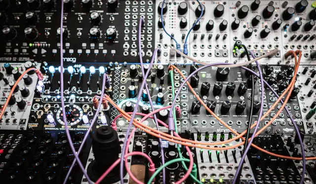

Wedding Suite
Two hundred envelopes, zero complaints.
Calligrapher · Portfolio
Copperplate, spencerian, and envelopes people keep instead of opening.

About
Copperplate, spencerian, and envelopes people keep instead of opening.
Everything on this page is made to be scrolled slowly. The work below is the honest list — outcomes attached, fluff removed.
Currently
Focus — Copperplate
Also — Brush lettering
Based — Kyoto
Selected work
Two hundred envelopes, zero complaints.

A zine comparing forty black inks.

Hand-lettered windows for a whole street.
A bespoke journal commissioned each December.
A beginner's set that sold out twice.
Live illumination at a manuscripts exhibition.
Services
Copperplate, spencerian, and envelopes people keep instead of opening. Copperplate is where this shows up most — ask for examples on a call.
Copperplate, spencerian, and envelopes people keep instead of opening. Brush lettering is where this shows up most — ask for examples on a call.
Copperplate, spencerian, and envelopes people keep instead of opening. Illumination is where this shows up most — ask for examples on a call.
Copperplate, spencerian, and envelopes people keep instead of opening. Layout & spacing is where this shows up most — ask for examples on a call.
Copperplate, spencerian, and envelopes people keep instead of opening. Commission work is where this shows up most — ask for examples on a call.
Copperplate, spencerian, and envelopes people keep instead of opening. Teaching is where this shows up most — ask for examples on a call.
Contact
Kyoto · replies within a day